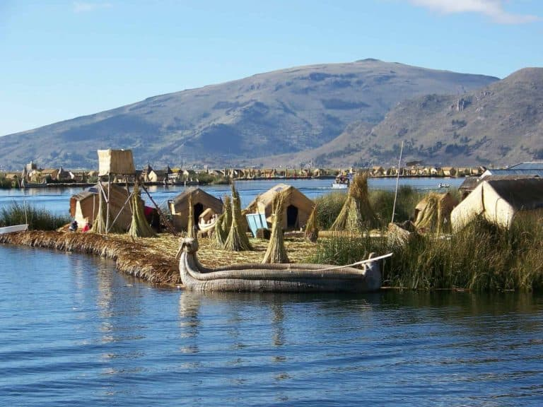
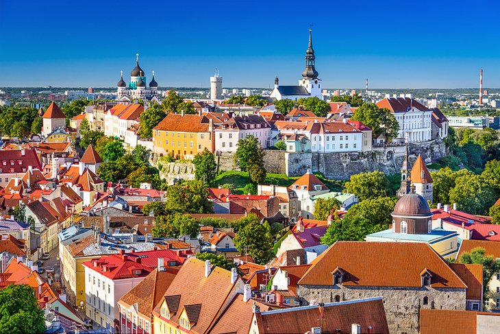
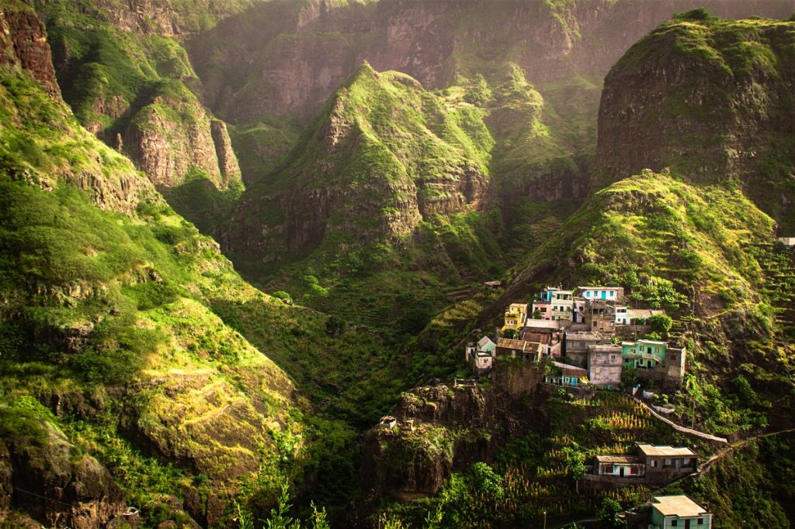
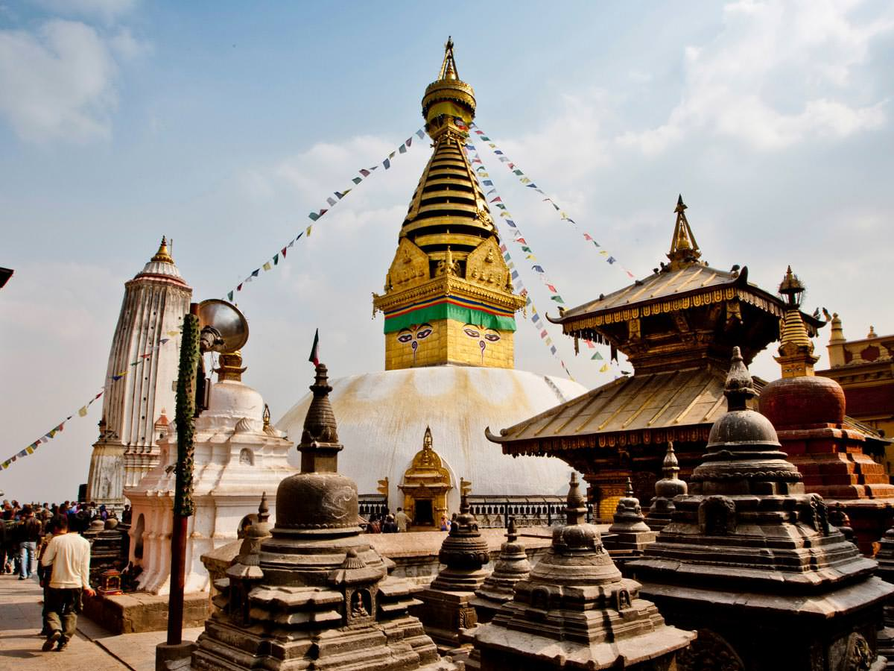
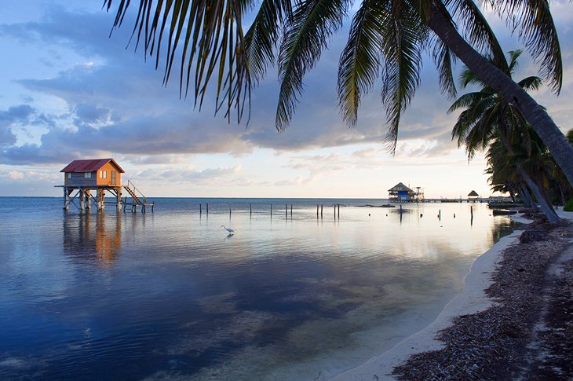
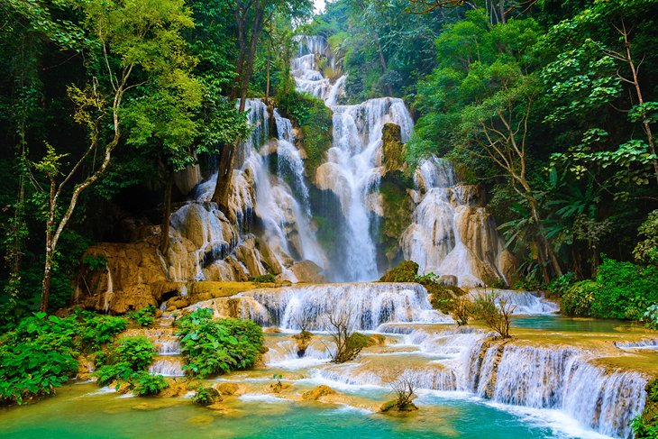
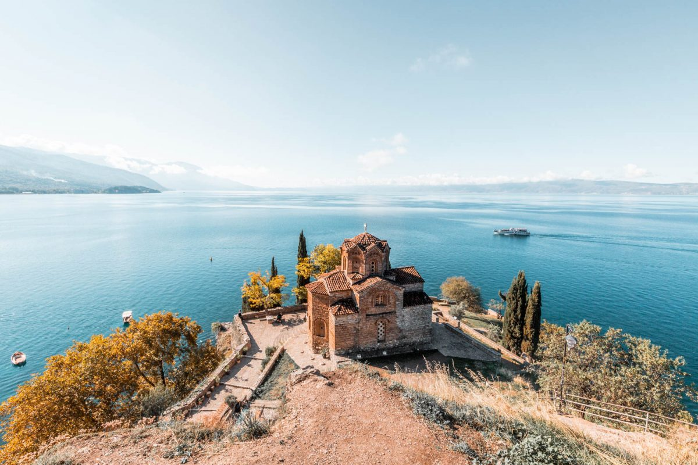
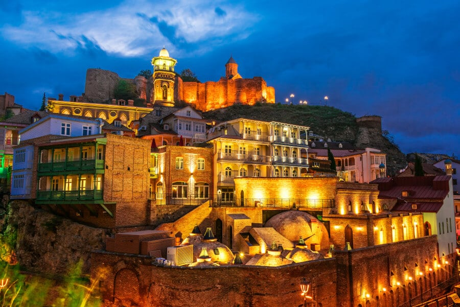
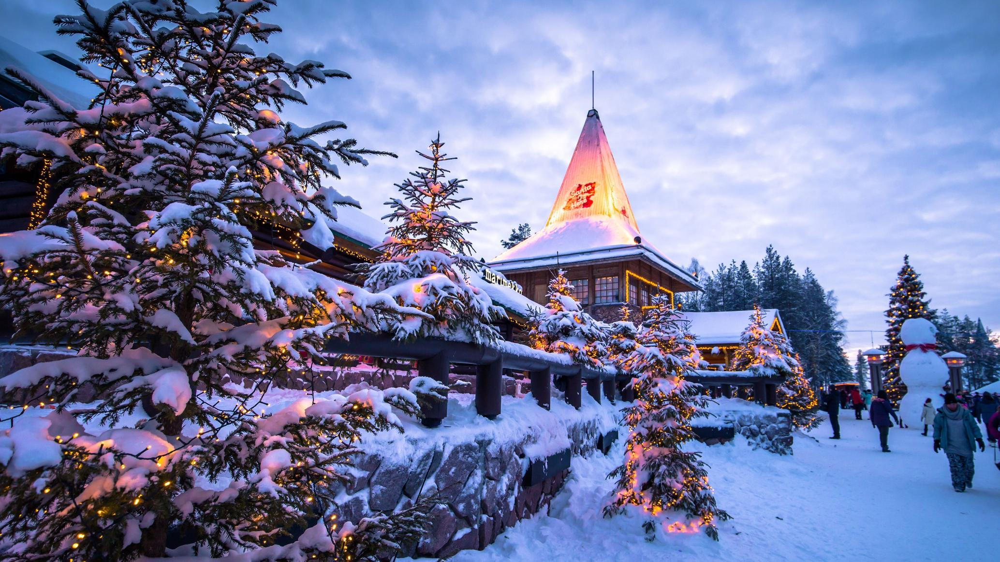

- 
Puno Region
Lake Titicaca,Peru
Lake Titicaca lies on a plateau known as the Altiplano which is made up of multiple basins. The western part of the lake lies in the Puno region of Peru, while the east part lies in the La Paz department in Bolivia. It is the second largest lake in South America
- 
Tallinn
Old Town
With narrow cobbled alleys, tall spires, and beautiful Hanseatic architecture, it’s no wonder that Tallinn’s Old Town is a UNESCO World Heritage site. It concentrates many of the Estonian capital’s bars and cafés, making it a vibrant and active area, a mixture of local and touristic life.
- 
Santo Antao
Fontainhas,Cabo Verde
Fontainhas is a fairytale village in the north of the island of Santo Antao. According to the National Geographic, it belongs to villages in the world with the most beautiful view. The picturesque village consists of colored houses located on an edge of a deep cliff of hundreds of meters deep. Fontainhas is surrounded by green mountains and has a great sea view.

Galápagos islands
Galápagos Province,Ecuador
The Galápagos are a group of 19 islands lying on the Equator. They became internationally famous after being visited in 1835 by British naturalist Charles Darwin; their unusual fauna, including the giant tortoise (Spanish galápago), contributed to his ideas on natural selection.
- 
Swayambhu Stupa
Kathmandu, Nepal
A golden spire crowning a conical wooded hill, Swayambhunath Stupa is the most ancient and enigmatic of all the holy shrines in Kathmandu valley. Its lofty white dome and glittering golden spire are visible for many miles and from all sides of the valley.
- 
Ambergris Caye
Ambergris Caye,Belize
Ambergris Caye is the largest island in Belize, and the main destination for travellers to this western Caribbean nation. San Pedro Town is the only town on the island. The rich variety of things to do in San Pedro Town makes Ambergris Caye the gateway to travel in this beautiful country.

Karakol
Holy Trinity Cathedral,Kyrgyzstan
Located at the crossroads of Central Asia, the city of Karakol in eastern Kyrgyzstan is a fascinating gateway to the region's diverse history, cuisine, and nature. Many unique cultures contribute to the town's culinary history and cultural heritage: Kyrgyz, Tatar, Russian, Dungan, Uighur, Kalmyk, Uzbek, and more.
- 
Luang Prabang
Kuang Si Waterfalls, Laos
The Kuang Si Falls alternatively known as the Tat Kuang Si Waterfalls, is a three-tiered waterfall about 29 kilometers south of Luang Prabang. The waterfalls are a favorite side trip for tourists in Luang Prabang, and begin in shallow pools atop a steep hillside.
- 
Ohrid
Church of St.John, North Macedonia
The Church of St.John at Kaneo must be the most iconic sight of Ohrid. Located on a cliff overlooking the beautiful Lake Ohrid and the surrounding mountains this is undeniably a must see when visiting Ohrid.
- 
Tbilisi
Old Town of Tbilisi, Georgia
Sitting at the foot of the imposing hill capped by the Narikala Fortress and climbing the slopes is Tbilisi Old Town, a labyrinth of narrow streets where wooden balconies look down from old brick-build homes.
- 
Rovaniemi
Santa Claus Village,Finland
Rovaniemi is the northernmost of Finland's major cities. It is located 8 kilometers from the Arctic Circle, 800 kilometers from Helsinki. Rovaniemi's most prominent landmarks include the Jätkänkynttilä bridge with its eternal flame over the Kemijoki river,the Arktikum Science Museum...